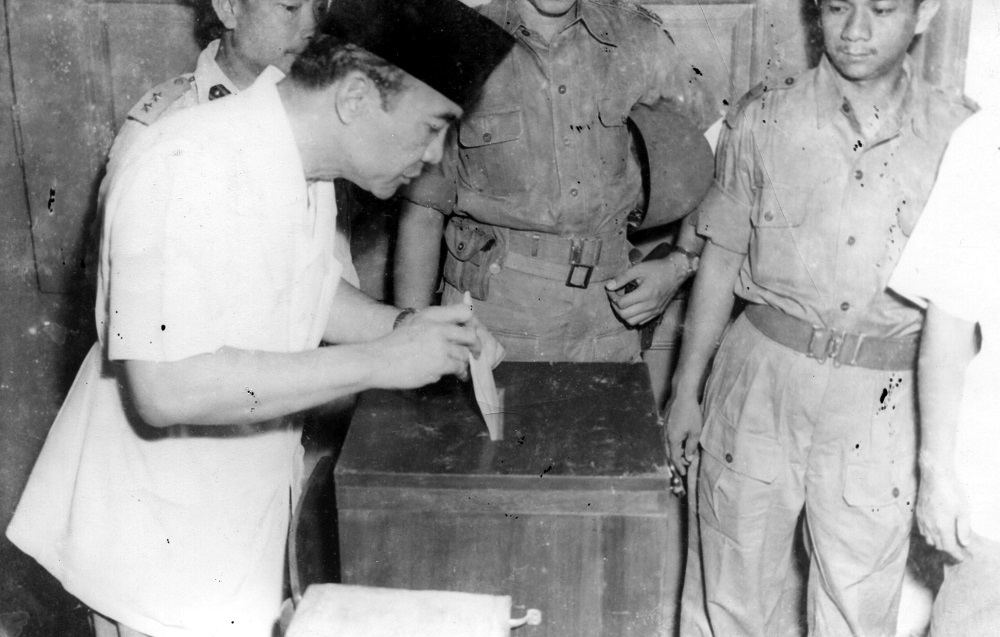

Sistem Pemerintahan Parlementer adalah salah satu sistem pemerintahan di mana para pelaku dari kekuasaan/lembaga eksekutif bekerja serta bertanggung jawab langsung kepada badan legislatif atau para parlemen. Di dalam sistem pemerintahan parlementer, lembaga parlemen memiliki peranan sangat penting dalam pemerintahan negara tersebut. Selain itu, lembaga parlemen juga memegang kekuasaan tertinggi serta mempunyai hak dan kewenangan yang besar dalam mengawasi kebijakan serta program kerja yang dilaksanakan oleh pelaku-pelaku lembaga eksekutif.
Sistem parlemen bisa memiliki seorang presiden sebagai kepala negara dan perdana menteri sebagai kepala pemerintahan. Kelebihan sistem parlemen adalah fleksibilitas dan tanggapannya pada respon publik. Sedangkan kekurangannya sering mengarah ke pemerintahan yang kurang stabil (1945-1949). Sistem pemerintahan parlemen memberikan wewenang kepada lembaga parlemen dalam hal mengangkat serta memberhentikan perdana menteri. Lembaga parlemen juga memiliki kemampuan untuk menjatuhkan pemerintahan tersebut menggunakan metode semacam mengeluarkan pernyataan tidak percaya dengan bunyi “mosi tidak percaya”.
Berbeda dengan pelaksanaan sistem pemerintahan presidensial yang dapat membuat presiden beserta wakil presiden menjadi miliknya dan membuat semacam hak milik untuk parlemen tersebut, pada sistem pemerintahan parlemen presiden dapat dikatakan hanya sebagai simbol atau penanda kepala negara tersebut dan pemerintahan sepenuhnya ada di tangan parlemen. Dalam Sistem pemerintahan parlementer ini dikelompokkan dari cabang lembaga eksekutif pemerintah tersebut. Semua itu tergantung dari dukungan baik secara langsung maupun tidak langsung dari cabang lembaga legislatif, atau parlemen. Bentuk dukungan yang diberikan sering diungkapkan melalui sebuah veto keyakinan.

|
Latar belakang demokrasi parlementer di Indonesia, yang juga dikenal sebagai demokrasi liberal, adalah jatuhnya Kabinet Presidensial Pertama
pada 14 November 1945. Jatuhnya kabinet ini disebabkan oleh keluarnya Maklumat Wakil Presiden No. X/1945 pada 16 Oktober 1945, yang diikuti oleh
Maklumat Pemerintah tertanggal 3 November 1945. Maklumat Pemerintah tersebut berisi seruan untuk mendirikan partai politik di Indonesia, sekaligus
menandai titik mula menuju sistem politik yang lebih pluralistik dan demokratis.
Sebagai kelanjutan dari Maklumat Pemerintah, Badan Pekerja Komite Nasional Indonesia Pusat (BPKNIP) mengumumkan perubahan itu melalui laporan pertanggungjawaban Menteri kepada Parlemen. Dalam hal ini, Parlemen adalah Komite Nasional Indonesia Pusat (KNIP). Usulan BPKNIP itu lantas disetujui oleh Presiden Soekarno pada 14 November 1945. Sejak itulah sejarah demokrasi parlementer dimulai. Sistem pemerintahan di Indonesia berubah secara otomatis dari sistem presidensial lalu memasuki |
masa demokrasi parlementer. Tokoh-tokoh Indonesia yang memercayai dibutuhkannya demokrasi parlementer di Indonesia di antaranya Mohammad Hatta dan
Sutan Syahrir. Menurut mereka, sistem pemerintahan tersebut mampu menciptakan partai politik yang bisa beradu pendapat dalam parlemen serta dapat
menciptakan wujud demokrasi sesungguhnya, yakni dari rakyat, bagi rakyat, dan untuk rakyat. Mohammad Hatta, dalam Demokrasi Kita, Pikiran-Pikiran
Tentang Demokrasi dan Kedaulatan Rakyat (2008:122) menambahkan, Indonesia berbentuk republik berlandaskan kedaulatan rakyat.
Kelebihan sistem pemerintahan parlementer adalah munculnya partai politik baru yang bebas berpendapat dan mengkritik pemerintahan, sebagaimana ditulis oleh Ahmad Muslih, dkk., dalam Ilmu Pengetahuan Sosial (2015:96).
Namun, seiring waktu, demokrasi parlementer melahirkan dampak negatif. Kekurangan sistem demokrasi parlementer yang nyata terlihat setelah beberapa tahun adalah menimbulkan persaingan tidak sehat. |

|
1. Peran Parlemen yang Tinggi 4. Pemilihan Umum 1955 |
2. Pertanggungjawaban Tinggi Pemegang Jabatan dan Politisi 5. Dijaminnya Hak-Hak Dasar Masyarakat |
3. Kepartaian Berkembang Bebas dan Pesat 6. Otonomi Daerah |
Kabinet Natsir (7 September 1950-21 Maret 1951)

Perdana Menteri: Mohammad Natsir
Wakil Perdana Menteri: Hamengku Buwono IX
Program Kerja:
Kabinet Natsir berupaya sekuat tenaga melibatkan semua partai yang ada di parlemen. Kabinet ini mempunyai program utama mengembalikan Irian Barat ke pangkuan Ibu Pertiwi, namun masih gagal. Selain itu, Kabinet Natsir memiliki program kerja lainnya yaitu menggiatkan usaha keamanan dan ketentraman, konsolidasi dan penyempurnaan pemerintahan, penyempurnaan organisasi angkatan perang, dan memperjuangkan penyelesaian Irian Barat.
Kejatuhan:
Dalam kepemimpinan Kabinet Natsir, ada beberapa kendala dan masalah yang harus dihadapi. Penerapan Sumitro Plan ternyata tidak berjalan maksimal akibat penyelewengan bantuan yang diberikan. Selain itu, Kabinet Natsir belum bisa lepas dari masalah pemberontakan di wilayah Indonesia, seperti Gerakan DI/TII, Gerakan Andi Aziz, Gerakan APRA, dan Gerakan RMS. Upaya memperjuangkan masalah Irian Barat juga mengalami kegagalan, yang menyebabkan munculnya mosi tidak percaya dari parlemen terhadap kabinet tersebut. Tekanan semakin besar hingga Hadikusumo dari PNI menyatakan mosi tidak percaya sekitar pencabutan PP Nomor 39 Tahun 1950 tentang DPRS dan DPRDS yang diterima oleh parlemen. Akibatnya, Kabinet Natsir Jatuh pada tanggal 21 Maret 1951.
Kabinet Sukiman (27 April 1951-23 Februari 1952)

Perdana Menteri: Sukiman Wirjosandjojo
Wakil Perdana Menteri: Suwirjo
Program Kerja:
Salah satu fokus program kerja Kabinet Sukiman adalah keamanan dan ketertiban negara. Hal tersebut dilakukan demi menanggulangi pemberontakan yang pernah terjadi di Indonesia. Selain itu, kabinet ini memiliki program kerja lainnya yaitu menjalankan secara tegas hukum negara untuk menjamin keamanan dan ketenteraman, serta menyempurnakan organisasi alat-alat kekuasaan negara; membuat dan melaksanakan rencana kemakmuran nasional dalam jangka pendek untuk mempertinggi sosial ekonomi rakyat, membaharui hukum agraria sesuai kepentingan petani, dan mempercepat usaha penempatan bekas pejuang dalam lapangan pembangunan; menyelesaikan persiapan pemilu untuk membentuk konstituante dan menyelenggarakan pemilu dalam waktu singkat; mempercepat otonomi daerah; menyiapkan undang-undang tentang Pengakuan Serikat Buruh dan Perjanjian Kerja Sama (collectieve arbeidsovereenkomst); menjalankan politik luar negeri yang bebas dan aktif untuk perdamaian, menyelenggarakan hubungan Indonesia-Belanda atas dasar Unite Statuut menjadi hubungan berdasarkan perjanjian internasional, mempercepat peninjauan kembali persetujuan KMB dan meniadakan perjanjian yang merugikan negara dan rakyat, serta memasukkan Irian Barat ke dalam wilayah Republik Indonesia secepatnya; dan meningkatkan kesejahteraan dan kesehatan rakyat.
Kejatuhan:
Beberapa kebijakan Sukiman ditentang oleh PNI, bahkan kabinetnya mendapatkan mosi tidak percaya dari partai politik tersebut. Kabinet Sukiman pada akhirnya jatuh karena dianggap menodai kebijakan politik luar negeri bebas aktif dengan cara menerima bantuan militer dan ekonomi dari Amerika Serikat yang disebut MSA (Mutual Security Act). Akhirnya, kabinet ini jatuh dan Sukiman mengembalikan mandat kepada Soekarno pada 3 April 1952.
Kabinet Wilopo (3 April 1952-3 Juni 1953)

Perdana Menteri: Mr. Wilopo
Wakil Perdana Menteri: Prawoto Mangkusasmito
Program Kerja:
Pada masanya, Wilopo selaku perdana menteri berhasil mendapatkan mayoritas suara parlemen. Tugas pokok Wilopo ketika itu menjalankan Pemilu untuk memilih anggota parlemen dan konstituante.
Kejatuhan:
Kabinet ini menghadapi beberapa permasalahan seperti gerak separatisme dan kondisi ekonomi negara yang mengalami kemerosotan. Selain itu, banyak pemberontakan yang terjadi di Sumatra dan Sulawesi. Kabinet Wilopo dianggap bersalah dalam penyelesaian masalah tanah perkebunan di Sumatera Utara (peristiwa Tanjung Morawa), di mana dilakukan pengerahan polisi untuk mengusir para petani ilegal yang menggarap tanah DPV (Deli Planters Vereeniging) di Tanjung Morawa, yang mengakibatkan 5 orang petani tewas. Oleh karena itu, muncul mosi tidak percaya dan kabinet Wilopo resmi menyerahkan mandatnya kepada presiden pada 2 Juni 1952.
Kabinet Ali Sastroamidjojo I (31 Juli 1953-12 Agustus 1955)

Perdana Menteri: Ali Sostroamidjojo
Wakil Perdana Menteri I: Wongsonegoro
Wakil Perdana Menteri II: Zainul Arifin Pohan
Program Kerja:
Beberapa program kerja Kabinet Ali Sastroamidjojo I adalah meningkatkan keamanan dan kemakmuran, menyelenggarakan pemilihan umum, membebaskan Irian Barat, melaksanakan politik bebas-aktif, meninjau kembali persetujuan Konferensi Meja Bundar, dan menyelesaikan pertikaian politik.
Kejatuhan:
Pada akhirnya program tersebut gagal karena pengusaha pribumi hanya dijadikan alat untuk mendapat bantuan kredit dari pemerintah. Kabinet ini jatuh karena konflik internal dengan TNI-AD mengenai persoalan pergantian kepemimpinan di lingkungannya, dan karena dianggap tidak mampu mengelola ekonomi Indonesia, di mana saat itu terjadi banyak kasus korupsi dan inflasi yang justru memperburuk ekonomi Indonesia. Selain itu, salah satu faktor penyebab kejatuhan kabinet ini adalah adanya konflik antara partai pendukung yaitu PNI dan NU, yang menyebabkan NU menarik dukungan dan menterinya dari kabinet tersebut. Kabinet Ali Sastroamidjojo I mengembalikan mandatnya kepada presiden Soekarno pada tahun 1955.
Kabinet Burhanuddin Harahap (12 Agustus 1955-3 Maret 1956)

Perdana Menteri: Burhanuddin Harahap
Wakil Perdana Menteri I: R. Djanu Ismadi
Wakil Perdana Menteri II: Harsono Tjokroaminoto
Program Kerja:
Beberapa program kerja Kabinet Burhanuddin Harahap adalah penyelenggaraan Pemilihan Umum (Pemilu) pertama, penyelesaian masalah Irian Barat, penanggulangan pemberontakan separatisme DI/TII, dan pelaksanaan program pembangunan ekonomi dan sosial.
Kejatuhan:
Kabinet ini berhasil melakukan tugasnya yaitu menyelenggarakan pemilu yang sudah direncanakan tanpa mengubah waktu pelaksanaan. Pemilu 1955 berjalan relatif lancar dan disebut-sebut sebagai pemilu paling demokratis. Karena itu perlu dibentuk kabinet baru, karena tugasnya sudah selesai.
Meskipun begitu, beberapa masalah pun terjadi pula, seperti perselisihan antar partai, tuntutan daerah mengenai otonomi lebih luas, usulan Soekarno untuk membentuk Dewan Nasional, dan adanya gerakan mahasiswa untuk menuntut reformasi politik dan pemberantasan korupsi. Oleh karena itu, pada 3 Maret 1956 Kabinet Burhanuddin Harahap mengundurkan diri dan digantikan oleh Ali Sastroamidjojo sebagai formatur baru.
Kabinet Ali Sastroamidjojo II (24 Maret 1956-14 Maret 1957)

Perdana Menteri: Ali Sostroamidjojo
Wakil Perdana Menteri I: Mohammad Roem
Wakil Perdana Menteri II: Idham Chalid
Program Kerja:
Beberapa program kerja yang dilaksanakan kabinet ini adalah pembatalan seluruh perjanjian KMB secara sepihak, perjuangan masalah Irian Barat, pemulihan kondisi negara dari berbagai aspek, dan pelaksanaan keputusan Konferensi Asia-Afrika.
Kejatuhan:
Kabinet ini jatuh karena terjadi perpecahan antara Partai Masyumi dan PNI, sehingga Masyumi menarik semua menterinya dari Kabinet Ali Sastroamidjojo II. Selain itu juga banyak pemberontakan dan tuntutan dari daerah terhadap pemerintah pusat. Berbagai masalah juga dialami kabinet ini, dari persoalan Irian Barat, otonomi daerah, nasib buruh, keuangan negara, dan sebagainya. Ali Sastroamidjojo pada periode yang keduanya ini tidak berhasil memaksa Belanda untuk menyerahkan Irian Barat. Kabinet ini pun mulai menuai kritik dan pada akhirnya membuat Kabinet Ali Sastroamidjojo mengembalikan mandatnya ke presiden Soekarno pada 9 April 1957.
Kabinet Djuanda (9 April 1957-6 Juli 1959)

Perdana Menteri: Djuanda Kartawidjaja
Wakil Perdana Menteri I: Hardi
Wakil Perdana Menteri II: Idham Chalid
Wakil Perdana Menteri III: Johannes Leimena
Program Kerja:
Berjalannya Kabinet Djuanda tidak mudah karena berada di tengah pergolakan Irian Barat hingga masalah ekonomi yang sangat buruk. Beberapa program kerja yang dilakukan kabinet ini adalah menyelesaikan persoalan pemberontakan daerah, membentuk dewan nasional, menormalisasi keadaan Republik Indonesia, melancarkan pelaksanaan pembatalan Konferensi Meja Bundar (KMB), memperjuangkan pengembalian Irian Jaya, dan mempercepat proses pembangunan. Kabinet Djuanda pun berhasil meraih kesepakatan Deklarasi Djuanda dan mengadakan musyawarah pembangunan nasional (Munas) untuk mendengarkan usulan atau aspirasi daerah dan mencegah pergolakan di daerah termasuk Irian Barat.
Kejatuhan:
Pada masa Kabinet Djuanda, terjadi upaya pembunuhan terhadap Presiden Soekarno dalam pemberontakan yang disebut Tragedi Cikini. Selain itu, terdapat beberapa penyebab kejatuhan kabinet ini yaitu banyaknya kepentingan antar golongan dan partai politik dalam pemerintahan, banyaknya peristiwa politik yang menyebabkan ketidakkonsistenan dalam berjalannya pemerintahan, kegagalan menghadapi pergolakan daerah, serta krisis ekonomi dan keuangan. Oleh sebab itu, Kabinet Djuanda secara resmi berakhir setelah keluarnya Dekrit 5 Juli 1959 yang sekaligus mengawali masa Demokrasi Terpimpin.
A. Pemilihan Umum 1995

Pemilihan umum legislatif Indonesia 1955, biasa dikenal sebagai Pemilu 1955, merupakan pemilihan umum pertama di Indonesia. Pemilu ini sering dianggap sebagai pemilu paling demokratis di Indonesia. Meskipun saat itu situasi keamanan negara masih kurang kondusif, terutama dengan kekacauan yang diakibatkan oleh kelompok DI/TII (Darul Islam/Tentara Islam Indonesia), khususnya di beberapa daerah di bawah kepemimpinan Kartosoewirjo. Pada akhirnya, pemilu pun berlangsung aman. Keberhasilan penyelenggaraan Pemilu 1955 di tengah kondisi keamanan yang sulit menunjukkan komitmen untuk mewujudkan proses demokrasi di Indonesia pada masa tersebut. Pemilihan ini menjadi langkah awal dalam menetapkan dasar bagi sistem demokrasi di Indonesia.
Latar Belakang
Pada tahun 1953, Indonesia mengalami serangkaian peristiwa yang mengarah pada persiapan dan pelaksanaan pemilihan umum. Awalnya, pemilihan direncanakan untuk Januari 1946, tetapi karena situasi Revolusi Nasional Indonesia, pemilihan terpaksa ditunda. Setiap kabinet setelah perang mencoba menyelenggarakan pemilihan umum, tetapi berbagai kendala, termasuk konflik politik dan kekhawatiran partai politik, membuatnya tertunda.
Pada bulan Februari 1952, kabinet Wilopo memperkenalkan RUU untuk pendaftaran pemilih, tetapi diskusi di Dewan Perwakilan Rakyat dimulai pada September karena keberatan dari partai politik. Konflik politik dan keengganan untuk memperkenalkan RUU pemilu menjadi kendala. Namun, banyak pemimpin politik ingin pemilihan umum untuk mengakhiri kompromi dengan Belanda dan meningkatkan legitimasi pemerintahan.
Pada 25 November 1952, RUU Pemilu diajukan ke Dewan Perwakilan Rakyat, dan setelah 18 minggu perdebatan dan 200 usulan amandemen, RUU tersebut disahkan pada 1 April 1953. RUU ini menetapkan jumlah keanggotaan legislatif dan memberikan hak memilih bagi semua orang di atas 18 tahun atau yang sudah menikah. Pada 4 April 1953, RUU tersebut menjadi hukum.
Meskipun kabinet jatuh pada 2 Juni, perdana menteri baru, Ali Sastroamidjojo, pada 25 Agustus 1953, mengumumkan jadwal persiapan untuk pemilihan yang dijadwalkan selama 16 bulan mulai Januari 1954. Pada 4 November, pemerintah mengumumkan Komite Pemilihan Pusat baru dengan anggota dari berbagai partai yang diwakili di pemerintahan.
B. Konferensi Asia–Afrika di Bandung

Konferensi Asia-Afrika adalah konferensi perdamaian dunia yang dilaksanakan pada tanggal 18-25 April 1955, bertempat di Gedung Merdeka, Bandung. Untuk mengantisipasi potensi bahaya Perang Dingin, Indonesia mengambil inisiatif dalam politik luar negeri dengan membentuk kerja sama antara negara-negara Asia dan Afrika dengan tujuan menjaga perdamaian dunia. Pada bulan April 1955, kabinet Ali Sastroamidjojo I menyelenggarakan Konferensi Asia-Afrika (KAA) yang dihadiri oleh 29 negara dari kedua benua tersebut. KAA dipandang sebagai keberhasilan besar dalam politik luar negeri Indonesia selama masa Demokrasi Parlementer.
Tujuan utama Konferensi Asia-Afrika adalah menggalang persatuan dan kesatuan negara-negara di Asia dan Afrika untuk mencapai keselamatan dan kedamaian dunia. Hal ini menempatkan Indonesia sebagai pemimpin yang mampu menyatukan negara-negara berkembang untuk bersikap netral terhadap peristiwa Perang Dingin yang sedang berlangsung pada masa itu. Konferensi ini pun menjadikan Indonesia sebagai pusat perhatian dalam kancah politik global.
Pasca Konferensi Asia Afrika, Indonesia terus mengukuhkan peran internasionalnya dengan menjadi menjadi salah satu pencetus Gerakan Non Blok pada tahun 1961 bersama Yugoslavia, India, Mesir, dan Ghana. Peristiwa ini menandai peran Indonesia sebagai pelopor dalam upaya menjaga kemerdekaan dan kedaulatan negara-negara berkembang di tengah gejolak Perang Dingin. Kesuksesan ini tidak hanya memperkuat posisi Indonesia di kancah internasional tetapi juga menegaskan komitmennya terhadap perdamaian dunia dan prinsip non-blok.
C. Deklarasi Djuanda

Pada 13 Desember 1957, Djuanda Kartawidjaja, yang menjabat sebagai Perdana Menteri Indonesia saat itu, menerbitkan Deklarasi Djuanda, sebuah rumusan pernyataan penting tentang menetapkan batasan perairan Indonesia. Deklarasi ini menjadi cikal bakal dan tonggak penting dalam pembentukan konsep wawasan Nusantara, menandai tekad Indonesia untuk memperjuangkan batas wilayah laut yang menyatukan, dan melindungi kesatuan negara.
Deklarasi Djuanda diakui sebagai kebijakan politik luar negeri di sektor maritim. Tujuan utama deklarasi ini adalah untuk mempertahankan integralitas negara Indonesia sebagai negara kesatuan dan juga untuk merubah batas laut teritorial Indonesia.
Pada masa pemerintahan kabinet Djuanda tahun 1957, Deklarasi Djuanda menetapkan bahwa laut yang mengelilingi, di antara, dan di dalam kepulauan Indonesia menjadi satu kesatuan wilayah Negara Kesatuan Republik Indonesia (NKRI). Deklarasi Djuanda kemudian diakui secara internasional dan selalu disampaikan dalam forum internasional seperti United Nations Conference on The Law of The Sea (UNCLOS) untuk mendapatkan pengakuan global.
Deklarasi Djuanda kemudian diakui secara internasional dan selalu disampaikan dalam forum internasional seperti United Nations Conference on The Law of The Sea (UNCLOS) untuk mendapatkan pengakuan global.
|
1. Mohammad Natsir |
2. Sukiman Wirjosandjojo Sukiman Wirjosandjojo memainkan peran penting dalam Demokrasi Parlementer Indonesia pada awal tahun 1950-an. Sebagai Perdana Menteri dalam Kabinet Sukiman, beliau menghadapi tantangan politik dan ekonomi, berusaha mengelola inflasi dan restrukturisasi kebijakan fiskal. Keterlibatannya dalam Partai Nasional Indonesia (PNI) mencerminkan dinamika politik pada masa itu, dan pengunduran dirinya pada tahun 1952 turut mempengaruhi perjalanan politik Indonesia. |
3. Wilopo Mr. Wilopo memainkan peran penting dalam periode Demokrasi Parlementer Indonesia. Sebagai Perdana Menteri dalam Kabinet Wilopo, fokusnya terutama pada pembangunan ekonomi dan sosial, mencoba mengatasi tantangan inflasi, dan merangsang pertumbuhan ekonomi. Meskipun menghadapi konflik politik dan tekanan internal, beliau terlibat dalam Pemilihan Umum 1955, menunjukkan komitmennya terhadap proses demokratis dan upaya untuk memperoleh legitimasi politik di tengah ketidakstabilan politik. Meskipun mengundurkan diri dari jabatan perdana menteri, peran Wilopo mencerminkan kontribusinya dalam mengelola kompleksitas dinamika politik pada masa tersebut. |
|
4. Ali Sastroamidjojo
Ali Sastroamidjojo memainkan peran penting dalam Demokrasi Parlementer Indonesia. Sebagai Perdana Menteri, beliau terlibat dalam inisiatif kebijakan ekonomi dan sosial, mengelola hubungan luar negeri, dan menyelenggarakan Pemilihan Umum 1955. Ali Sastroamidjojo juga berkontribusi pada penciptaan konsep Wawasan Nusantara, mencerminkan kepemimpinan dan perannya dalam pengembangan arah politik dan luar negeri Indonesia pada masa tersebut. Meskipun masa pemerintahannya relatif singkat, dampaknya signifikan terhadap perkembangan politik dan ekonomi di Indonesia. |
5. Burhanuddin Harahap
Burhanuddin Harahap memainkan peran penting dalam Demokrasi Parlementer Indonesia. Sebagai mantan Perdana Menteri dan anggota Partai Nasional Indonesia (PNI), kontribusinya mencakup kepemimpinan dalam pemerintahan, partisipasi dalam pemilihan umum, dan keterlibatan dalam dinamika politik partai. Pengunduran dirinya pada tahun 1956 mencerminkan tantangan dan konflik politik pada masa itu, mengakhiri masa kepemimpinannya sebagai salah satu tokoh politik kunci pada periode Demokrasi Parlementer Indonesia. |
6. Djuanda Kartawidjaja Djuanda Kartawidjaja memainkan peran sentral dalam Demokrasi Parlementer Indonesia. Sebagai Perdana Menteri, kontribusinya mencakup pengembangan kebijakan ekonomi "Gotong Royong," penerapan konsep Wawasan Nusantara, dan kepemimpinannya selama periode kemakmuran dan stabilitas politik. Melalui kebijakan-kebijakannya, Djuanda membentuk dasar untuk pembangunan nasional Indonesia pada masa itu, termasuk penetapan batas wilayah maritim dengan Deklarasi Djuanda. |
Lanjut ke Demokrasi Terpimpin →